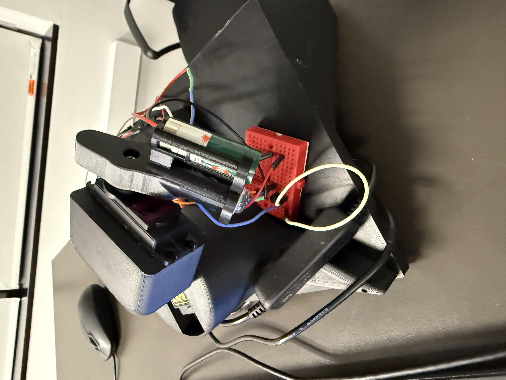

TV Remote Locating Buddy
Introduction
I am a member of Makers, an ECE club at USC where Viterbi Engineering students spend the year building group projects. I worked in a team of six to build a robot that finds lost TV remotes. This project pushed me out of my comfort zone, as I gained experience working with a Raspberry Pi and ESP32s microcontrollers.
Concept

Losing a TV remote can be extremely frustrating, especially if your favorite sports team is playing live. Our creation solves this problem.
The concept was to place four ESP32 microcontrollers around the room at each corner, one ESP32 inside the TV remote, and have them all communicate with each other to determine an (x,y,z) coordinate that represents the remote’s location. Then, a robot mounted on the wall would use servos to point a laser at that coordinate.
UWB Distancing
We set up four ESPs with radio modules, put them in 3D-printed boxes, and placed them at each corner of the room. The fifth ESPs was placed inside of the TV Remote, acting as the anchor.
The ESP32s communicate wirelessly and emit radio signals, so finding the distance between two is just the time of one wave multiplied by the speed of light. We used this to calculate the distance between the remote and each corner of the room. With these four distances, a system of equations is solved to find the remote’s location in space as an (x, y, z) coordinate. This is known as Ultra-Wideband (UWB) Triangulation.
Pointing the Laser
For the servos to move into the right spot, we had to convert the Cartesian coordinate found by the ESP32s into horizontal and vertical angles. The horizontal angle was calculated using:
$$ \theta_h = -(\tan^{-1}\left(\frac{x}{y}\right) \cdot \frac{180}{\pi} - 180) - 180 $$
This centers the laser’s rotation relative to the base coordinate system. To find the vertical angle, we first calculated the horizontal plane distance \( p \) and then derived the angle from the z-axis using:
$$ p = \sqrt{x^2 + y^2} $$ $$ \text{ratio} = \frac{z}{p} $$ $$ \theta_v = -90 - \tan^{-1}(\text{ratio}) \cdot \frac{180}{\pi} $$
The robot itself consists of a laser mounted to the side of two perpendicular servos that allow it to point to any coordinate in R3. The horizontal servo moves from left to right along the XY plane, and the vertical servo moves up and down along the YZ plane. Everything is controlled by a Raspberry Pi microprocessor.
Python Code
import paho.mqtt.client as mqtt
import re
import numpy as np
from scipy.optimize import least_squares
import RPi.GPIO as GPIO
import time
import math
# === Globals ===
latest_position = None
current_horizontal_angle = 0
current_vertical_angle = 0
# === GPIO pin setup ===
GPIO.setmode(GPIO.BCM)
SERVO_X_PIN = 18
SERVO_Y_PIN = 27
LASER_PIN = 25
BUTTON_PIN = 22
GPIO.setup(SERVO_X_PIN, GPIO.OUT)
GPIO.setup(SERVO_Y_PIN, GPIO.OUT)
GPIO.setup(LASER_PIN, GPIO.OUT)
GPIO.setup(BUTTON_PIN, GPIO.IN, pull_up_down=GPIO.PUD_DOWN)
servo_x = GPIO.PWM(SERVO_X_PIN, 50)
servo_y = GPIO.PWM(SERVO_Y_PIN, 50)
servo_x.start(0)
servo_y.start(0)
# === Distance history ===
distance_history = {
"ULCORNER": [],
"URCORNER": [],
"BLCORNER": [],
"BRCORNER": []
}
MAX_HISTORY_LENGTH = 10
# === Reference points ===
ref1 = np.array([-27.94, 0, -232.41]) # BL
ref2 = np.array([-83.82, 461, -232.41]) # UL
ref3 = np.array([218.44, 461, -232.41]) # UR
ref4 = np.array([299.72, 0, -232.41]) # BR
# === Helper functions ===
def update_history(esp32_id, new_distance):
if esp32_id in distance_history:
distance_history[esp32_id].append(new_distance)
if len(distance_history[esp32_id]) > MAX_HISTORY_LENGTH:
distance_history[esp32_id].pop(0)
def extract_distance(data):
match = re.search(r'(\d+)\s*cm', data)
return float(match.group(1)) if match else None
def calculate_average(arr):
if not arr:
return 0
arr_np = np.array(arr)
mean = np.mean(arr_np)
std = np.std(arr_np)
filtered = arr_np[(arr_np >= mean - 0.8 * std) & (arr_np <= mean + 0.8 * std)]
if len(filtered) == 0:
filtered = arr_np
alpha = 0.3
smoothed = filtered[0]
for val in filtered[1:]:
smoothed = alpha * val + (1 - alpha) * smoothed
return smoothed
def triangulate_position():
global latest_position
if all(len(distance_history[k]) >= 3 for k in ["ULCORNER", "URCORNER", "BLCORNER", "BRCORNER"]):
d1 = calculate_average(distance_history["BLCORNER"])
d2 = calculate_average(distance_history["ULCORNER"])
d3 = calculate_average(distance_history["URCORNER"])
d4 = calculate_average(distance_history["BRCORNER"])
def my_system(vars):
x, y, z = vars
F = np.zeros(4)
F[0] = np.sqrt((x - ref1[0])**2 + (y - ref1[1])**2 + (z - ref1[2])**2) - d1
F[1] = np.sqrt((x - ref2[0])**2 + (y - ref2[1])**2 + (z - ref2[2])**2) - d2
F[2] = np.sqrt((x - ref3[0])**2 + (y - ref3[1])**2 + (z - ref3[2])**2) - d3
F[3] = np.sqrt((x - ref4[0])**2 + (y - ref4[1])**2 + (z - ref4[2])**2) - d4
return F
initial_guess = [100, 100, 100]
result = least_squares(my_system, initial_guess)
latest_position = np.round(result.x, decimals=4)
print("Unknown point:", latest_position)
def on_message(client, userdata, msg):
esp32_id = msg.topic.split("/")[-1]
data = msg.payload.decode().strip()
distance = extract_distance(data)
if distance is not None:
update_history(esp32_id, distance)
triangulate_position()
def cartesian_to_servo_angles(x, y, z):
horizontal_angle = -(math.degrees(math.atan2(x, y)) - 180) - 180
p = math.sqrt(x**2 + y**2)
ratio = z / p if p != 0 else 0
ratio = max(min(ratio, 10), -10)
vertical_angle = -90 - math.degrees(math.atan(ratio))
return horizontal_angle, vertical_angle
def angle_to_duty_cycle(angle):
return max(2, min(12, 2 + (angle + 90) * 10 / 180))
def turn_laser_on():
GPIO.output(LASER_PIN, GPIO.HIGH)
def turn_laser_off():
GPIO.output(LASER_PIN, GPIO.LOW)
def point_laser_at_position(position):
global current_horizontal_angle, current_vertical_angle
target_x, target_y, target_z = position
target_horizontal_angle, target_vertical_angle = cartesian_to_servo_angles(target_x, target_y, target_z)
target_horizontal_angle -= 20
target_vertical_angle += 7
step_size = 1
turn_laser_on()
time.sleep(0.5)
# Horizontal movement
while round(current_horizontal_angle, 1) != round(target_horizontal_angle, 1):
if current_horizontal_angle < target_horizontal_angle:
current_horizontal_angle = min(current_horizontal_angle + step_size, target_horizontal_angle)
else:
current_horizontal_angle = max(current_horizontal_angle - step_size, target_horizontal_angle)
duty = angle_to_duty_cycle(current_horizontal_angle)
servo_x.ChangeDutyCycle(duty)
time.sleep(0.1)
servo_x.ChangeDutyCycle(0)
time.sleep(0.2)
# Vertical movement
while round(current_vertical_angle, 1) != round(target_vertical_angle, 1):
if current_vertical_angle < target_vertical_angle:
current_vertical_angle = min(current_vertical_angle + step_size, target_vertical_angle)
else:
current_vertical_angle = max(current_vertical_angle - step_size, target_vertical_angle)
duty = angle_to_duty_cycle(current_vertical_angle)
servo_y.ChangeDutyCycle(duty)
time.sleep(0.1)
servo_y.ChangeDutyCycle(0)
time.sleep(0.2)
time.sleep(3)
turn_laser_off()
# === MQTT setup ===
client = mqtt.Client()
client.on_message = on_message
client.connect(mqtt_broker, mqtt_port, 60)
for topic in mqtt_topics:
client.subscribe(topic)
print("Subscribed to MQTT topics.")
print("Listening for button press...")
try:
while True:
client.loop(timeout=0.1)
if GPIO.input(BUTTON_PIN) == GPIO.HIGH:
print("Button pressed!")
if latest_position is not None:
point_laser_at_position(latest_position)
else:
print("Not enough data to triangulate yet.")
time.sleep(0.5)
except KeyboardInterrupt:
print("Shutting down...")
finally:
servo_x.stop()
servo_y.stop()
turn_laser_off()
GPIO.cleanup()
print("GPIO cleaned up.")
CAD Modeling
The designed CAD models for the robot are shown to the left.
Final Demonstration
A short demo is shown in the video. We placed the remote in a random spot, turned on the program, and the laser pointed with near-perfect accuracy.